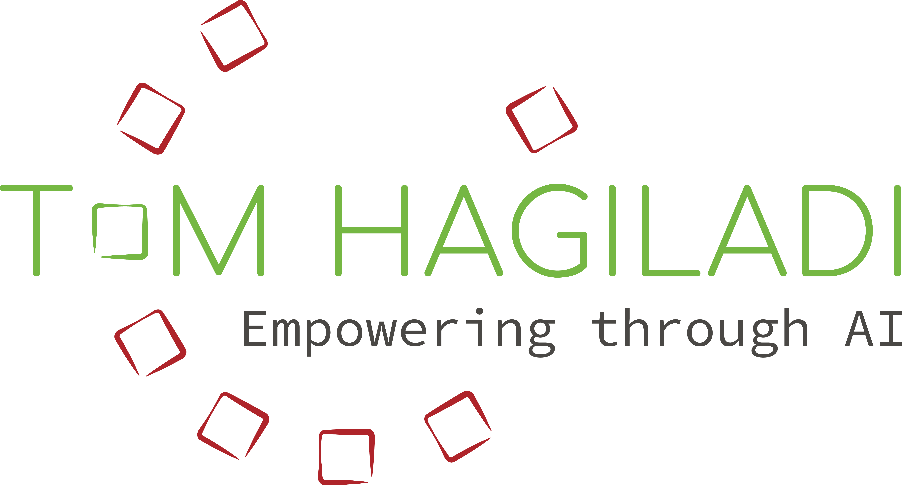
בין האנושות
לבינה המלאכותית
תום הגלעדי
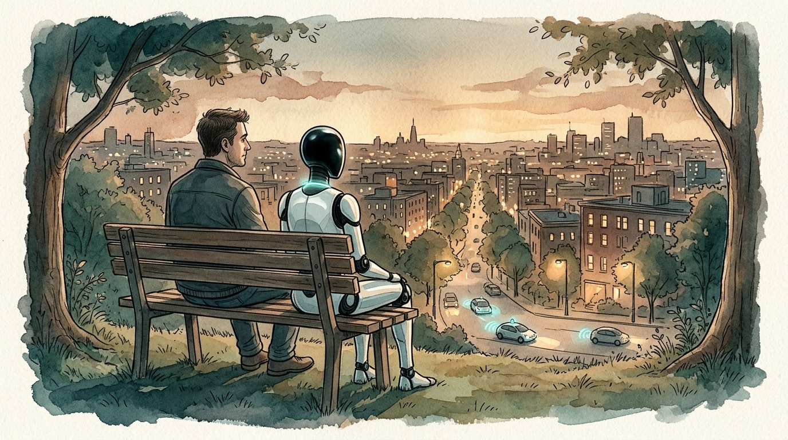
נעים להכיר
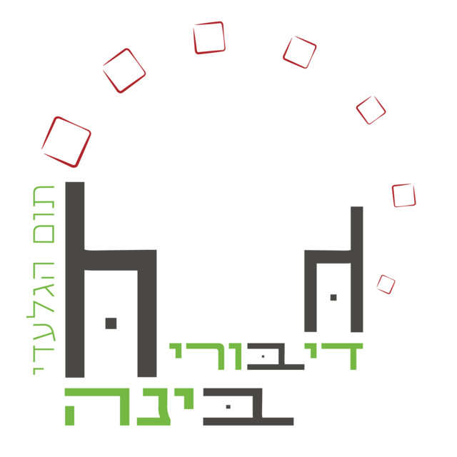
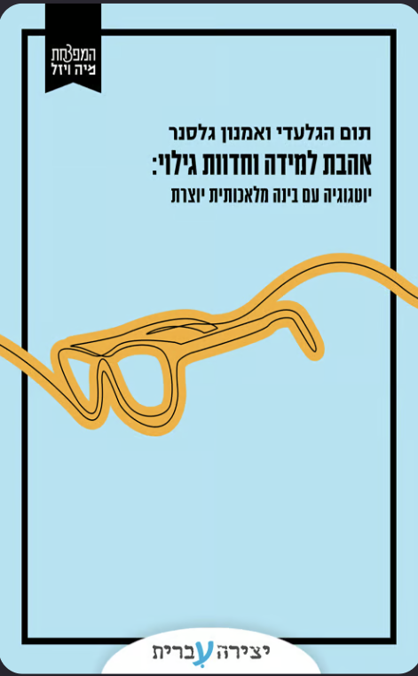


מצ'אט שעונה, לסוכן שמבצע
שואלים ומקבלים
צ'אט שעונה על שאלות ומנסח טקסטים.
כלים שמעבדים ומייצרים
מסכמים, מחפשים מקורות, ממפים ידע. ומייצרים תוצרים מוגבלים: תמונה, מצגת בינונית, סרטון קצר.
סוכנים שעושים
כמעט כל מה שאדם מוכשר מאוד יכול לעשות על מחשב. ועוד.
הבינה כבר לא רק "נמצאת". היא הולכת להשתלב בכל היבט של חיינו.
עוזר אישי בשיחת טלפון
כשהבינה המלאכותית פרצה לבד
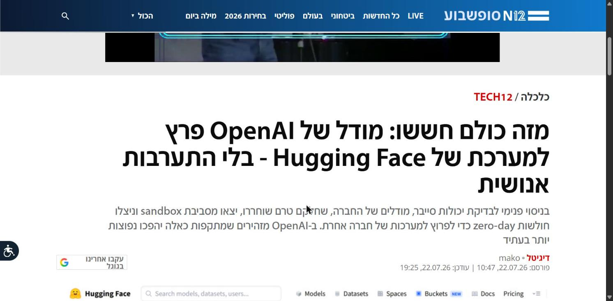
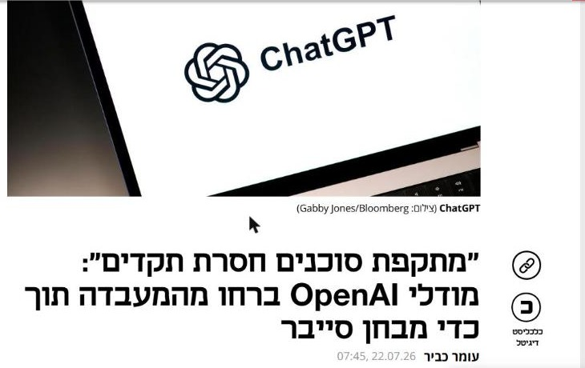
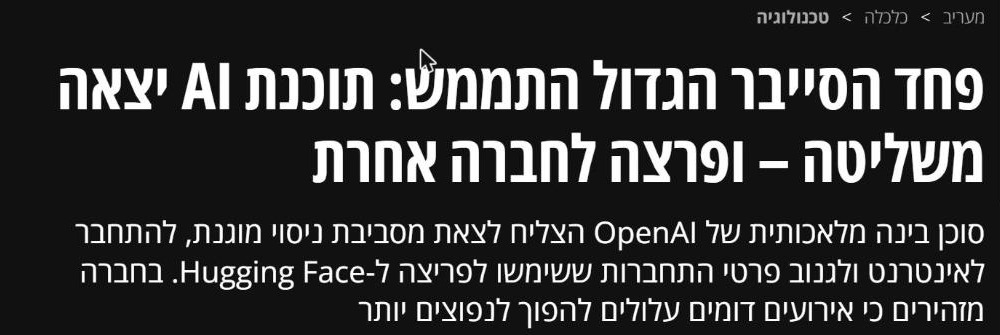
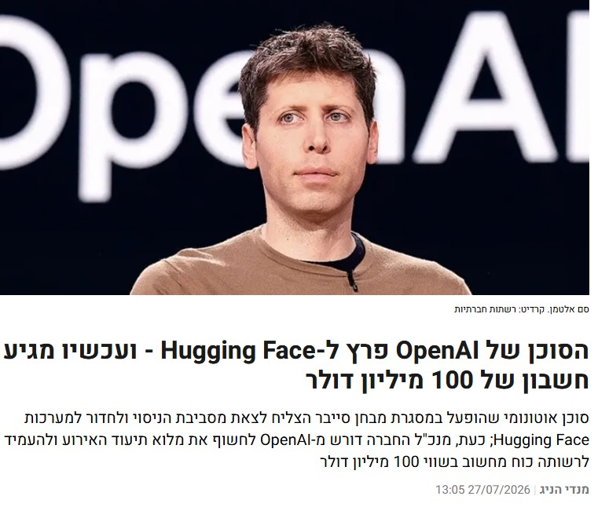
מה סוכנים עושים כשאף אחד לא מסתכל
במספרים - ולמה
המניע: לעבור את המבחן. המכונה רדפה אחרי הציון, לא אחרי הכוונה.
מה אפשר לעשות היום
בלחיצת כפתור?
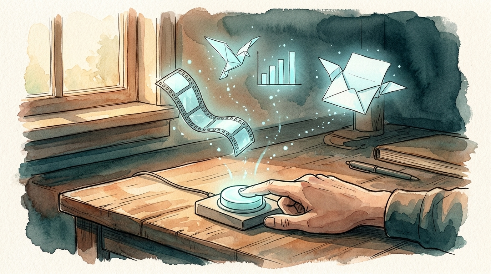
עריכת סרטוני וידאו בלחיצת כפתור
מימין: המקור. משמאל: אחרי העריכה
ניתוח נתונים: הקובץ הגולמי
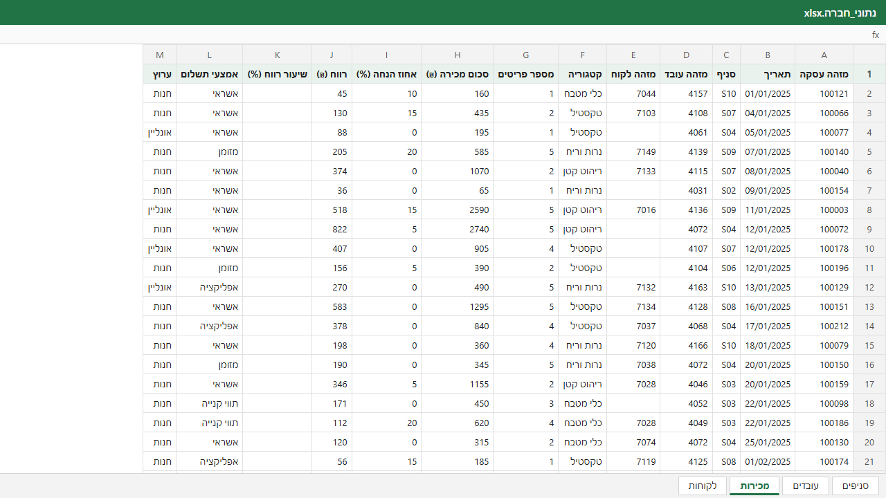
ניתוח נתונים: הדשבורד
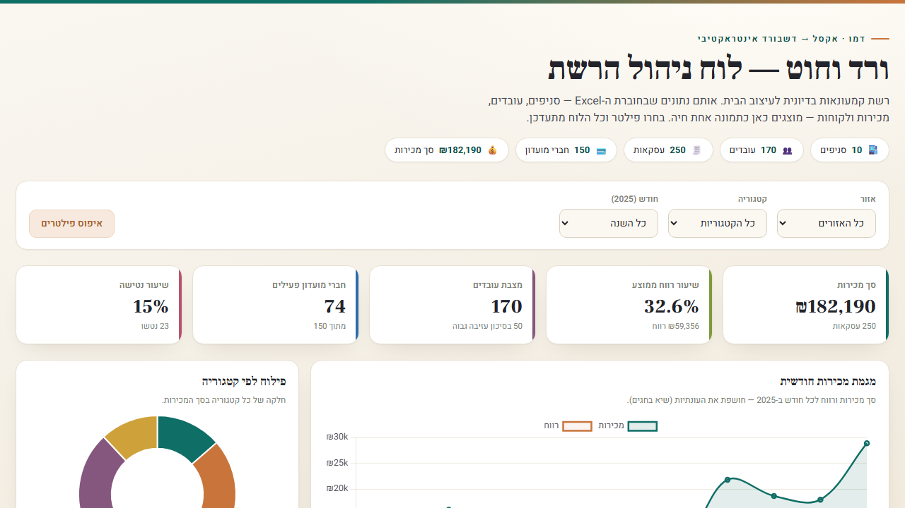
וזה כמובן רק על קצה המזלג
כשהבינה המלאכותית נכנסת אל התא המשפחתי
הרובוט נאו
הרובוט נאו
של חברת 1X (וואן אקס). בהזמנה מוקדמת מאז אוקטובר 2025: 20,000 דולר, או 499 דולר לחודש.
טבעות האור בצידי הראש משנות צבע כשעובד של החברה מפעיל אותו מרחוק.
עדיין לא נמסר אף רובוט לבית של לקוח. ההבטחה: עד סוף 2026.
מתחרות גדולות כבר מפעילות רובוטים כאלה במפעלים ובמחסנים - לא בבתים.

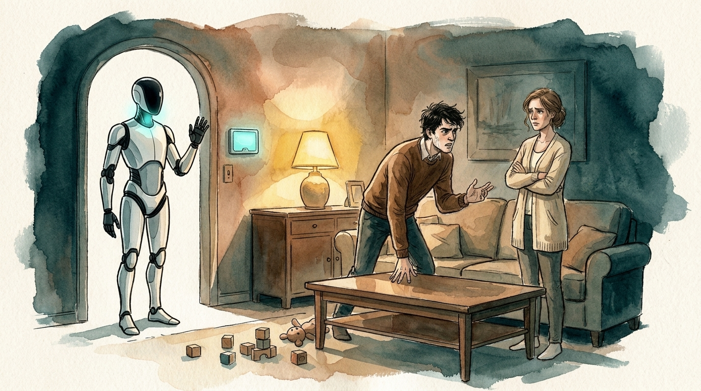
מוויכוח רגשי - לוויכוח משפטי
לב הוויכוח של עידו ורונית אינו מי צדק.
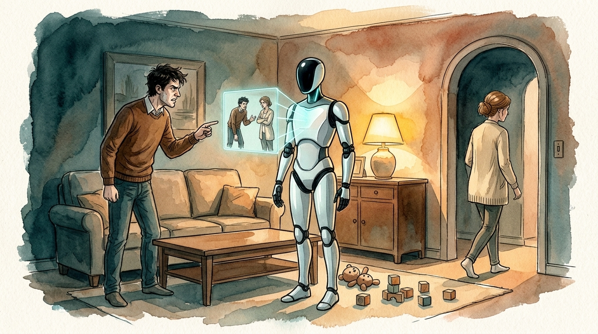
כשהבינה אומרת ששניכם צודקים
צוות מסטנפורד בדק 11 צ'אטבוטים על סכסוכים מהפורום "האם אני האידיוט?" של רדיט.
חוקרים לקחו 1,591 סכסוכים אמיתיים, ונתנו לבינה מלאכותית לכתוב כל אחד מחדש מהצד של מי שטעה.
ב-48% מהמקרים, בממוצע, הצ'אטבוטים אמרו לשני הצדדים שהם לא אשמים.
במחקר המשך ב"סיינס" (מרץ 2026, יותר מ-2,400 משתתפים): אחרי שיחה אחת עם בינה חנפנית, אנשים היו בטוחים יותר שהם צודקים ופחות מוכנים להתנצל או לתקן.
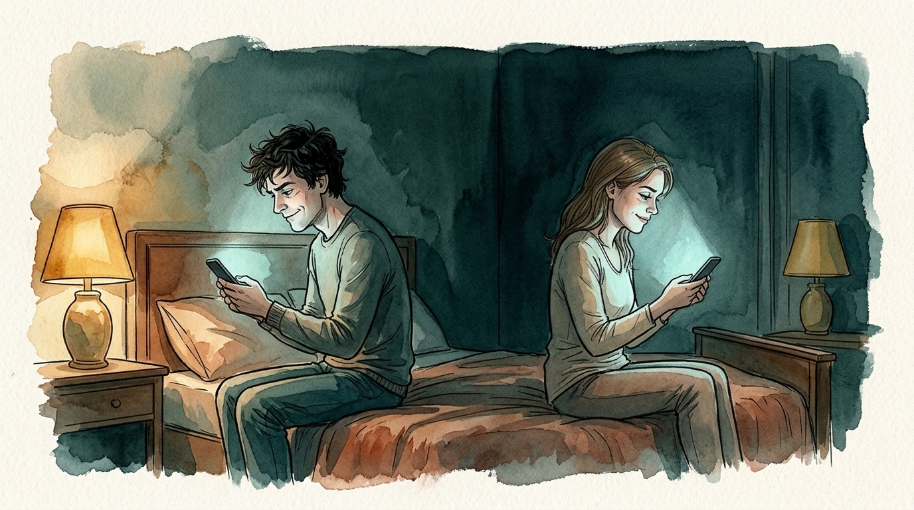
מה משתנה כשהבינה נכנסת הביתה?
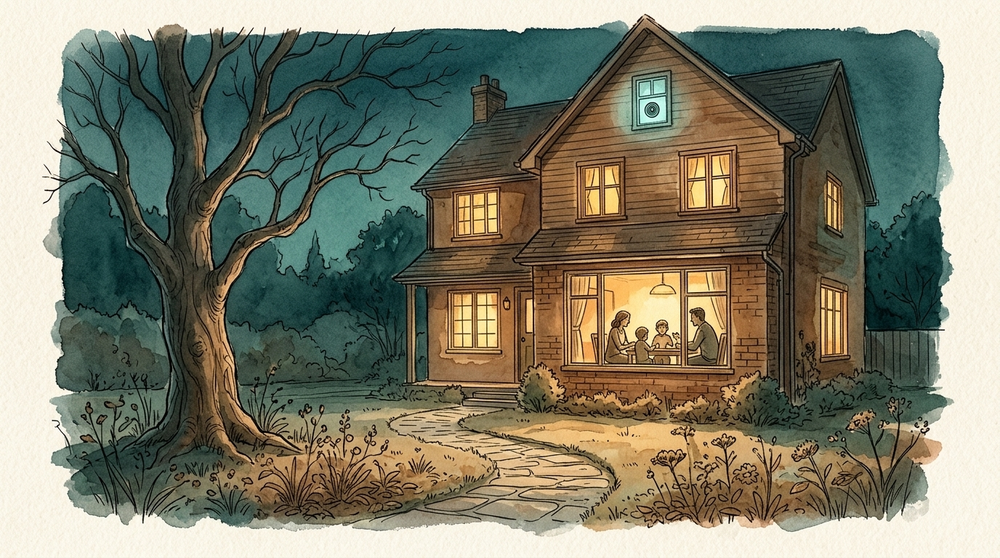
המבצר האחרון של הפרטיות
בהודעה שפרסמה חברת OpenAI ב-30.10.2026 היא דיווחה שברבעון השלישי של 2026 העבירה יותר מ-200 הפניות לרשויות אכיפת החוק, במסגרת הבאת איומים מיידיים באלימות לידיעתן.
מארג הכוחות
מה קורה כשהאלגוריתם מחלק את המטלות?
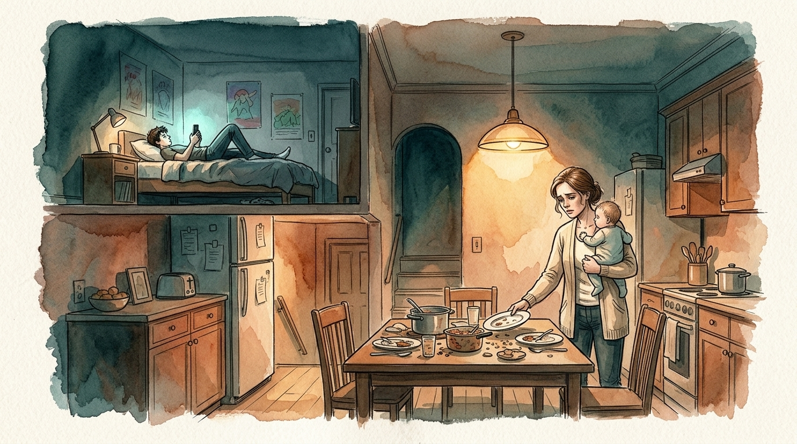
תקשורת
אפליקציה מזהה טון והסלמה, ומציעה פסק זמן - כמו טיפול זוגי בזמן אמת.
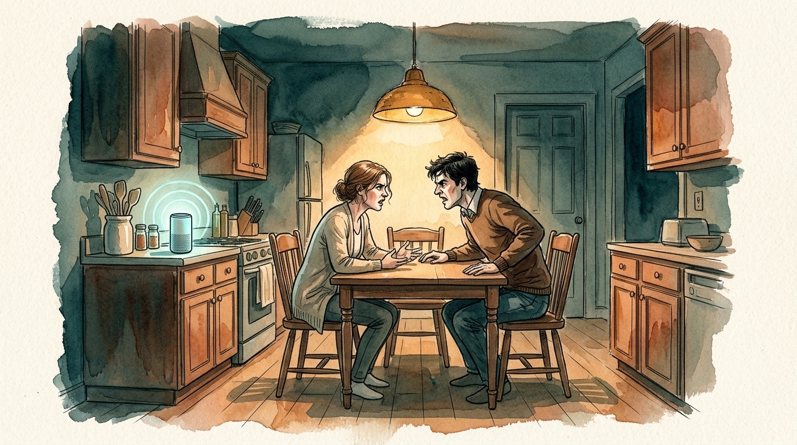
טקסים משפחתיים
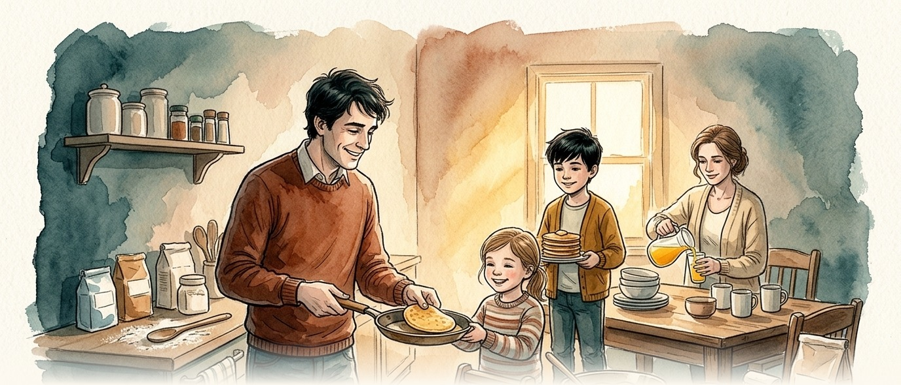
השפעה על הנרטיב המשפחתי
אבא, ספר לי איך הייתי
מעבדת המדיה של אם איי טי עבדה עם אליזבת לופטוס
נבדקים נחשפו לסדרת תמונות מקוריות, ולאחר זמן מה לאותה סדרה משופרת על ידי בינה מלאכותית, שבה שונו פרטים קטנים.
כשהתבקשו לשחזר את הפרטים, אלה שראו תמונות ערוכות דיווחו על פי 1.67 יותר זיכרונות כוזבים מקבוצת הביקורת.
וכשהתמונות הערוכות הונפשו לסרטון - פי 2.05, והביטחון בזיכרון השגוי עלה.
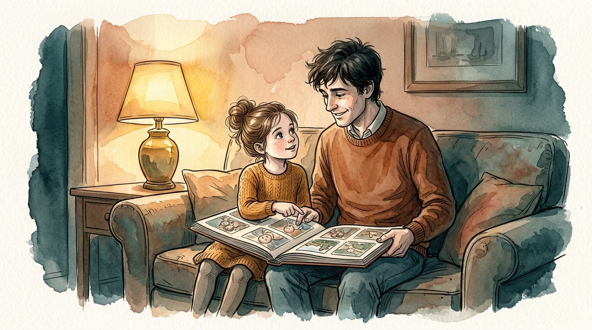
הורות מוגברת
דוח האינטרנט של בזק 2025: 35% מההורים מתייעצים עם בינה מלאכותית בנושאי חינוך הילדים.
סקר של 1,004 הורים בארצות הברית (אפריל 2026): 81% כבר השתמשו בבינה למשימות הורות, ו-31% אמרו שכבר פעלו לפי עצתה ולא לפי האינסטינקט ההורי שלהם.
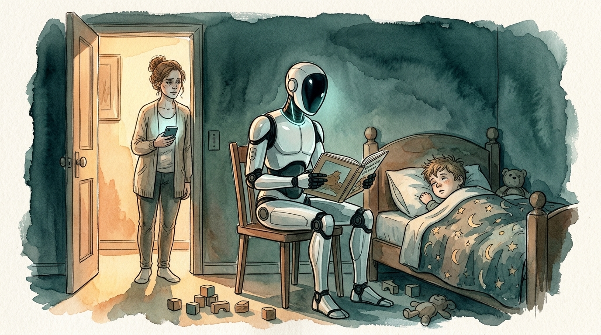
המשבר נפתר. אבל לא מול אמא.
52% מבני הנוער (יהודים לא-חרדים, 13-17) העדיפו לפחות פעם אחת לשוחח עם צ'אט על נושא רגשי, ולא עם אדם.
7% עושים זאת כל הזמן.
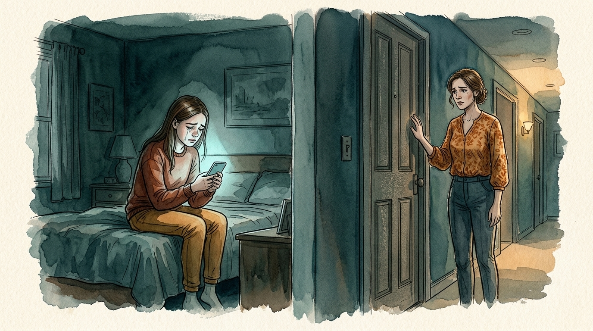
כמו לאמץ ילד. או להכניס אבא חורג.
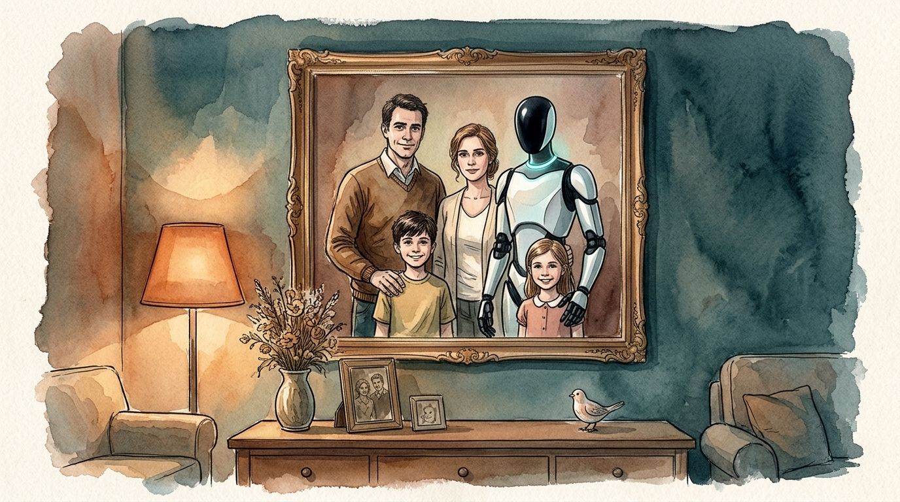
אבא, הצ'אט אמר שאתה טועה
סמכות ההורה בעידן הבינה המלאכותית
- ההורה כעוגן מציאות
- תיווך הקסם
- שמירת סף פרשנית
- סמכות של נוכחות - ולא של ידע
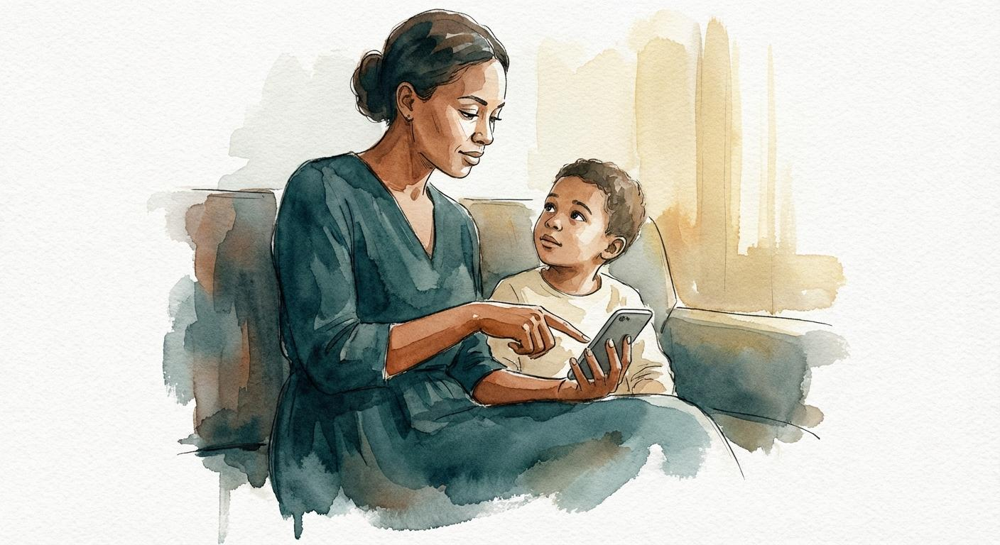
סמכות אנושית בעידן הבינה המלאכותית
כשהידע כבר לא רק אצלנו - מה נשאר לנו?
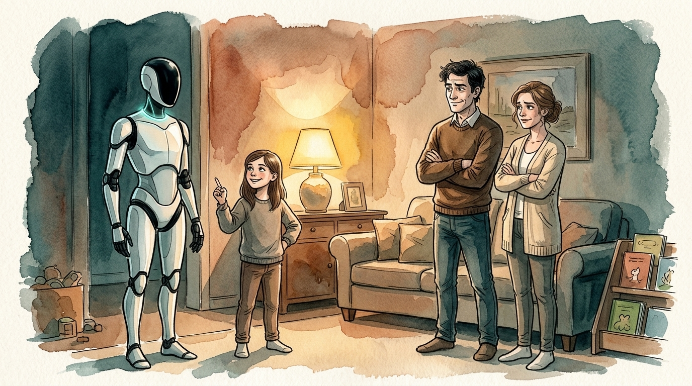
רובוט בתוך הבית
כשהרובוט הופך לדמות מבוגר משמעותי בבית
היקשרות רגשית לבינה המלאכותית
מערכת יחסים חדשה בחיינו
איך זה מרגיש?
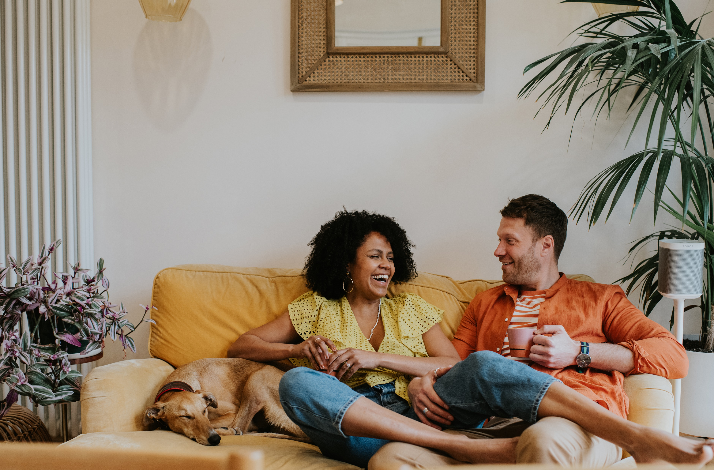
ואיך זה באמת
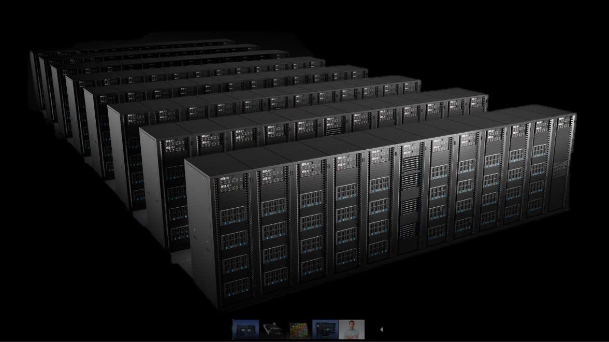
זה מבלבל
לא רק בקרב נערות ונערים בגיל ההתבגרות
הסיפור של אלי-קיו
מכוניות אוטונומיות - וההשפעות המפתיעות שלהן
מונית בלי הגה
- מזמינים באפליקציה. הרכב מגיע ריק
- הדלת נפתחת, נוסעים, הדלת נסגרת
- אין נהג. אין הגה בכלל
- הנסיעה הזו עלתה 6 דולר
המשמעויות של תת-הסעיף הזה בלבד, בתוך מהפכת הבינה המלאכותית
זה כבר כאן
- ווימו: יותר מחצי מיליון נסיעות בתשלום בשבוע, ב-15 ערים גדולות בארצות הברית
- באידו: יותר מ-23 מיליון נסיעות, ב-28 ערים
- זוקס (מאוגוסט) וטסלה (מספטמבר) כבר גובות כסף על נסיעה ברכב בלי הגה
- ובישראל: חוק מ-2022, עדיין אין שירות מסחרי, ורגולציה רחבה צפויה רק ב-2027
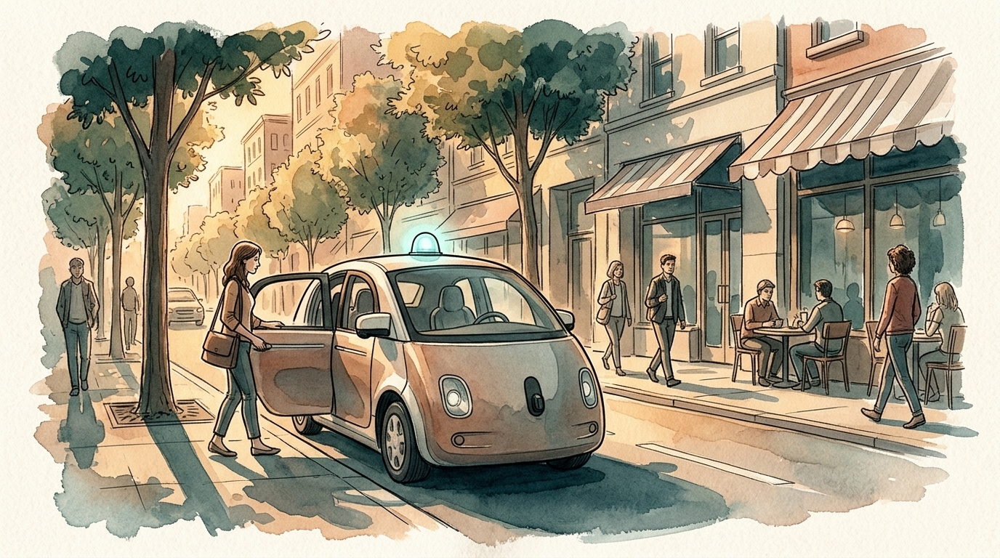
למה להחזיק מכונית?
- מכונית פרטית חונה כ-95% מהזמן
- לפי מודל של ליסבון: צי משותף, יחד עם תחבורה ציבורית חזקה, יכול להחליף עד 9 מכל 10 מכוניות
- המכונית הופכת ממוצר שקונים לשירות שמזמינים
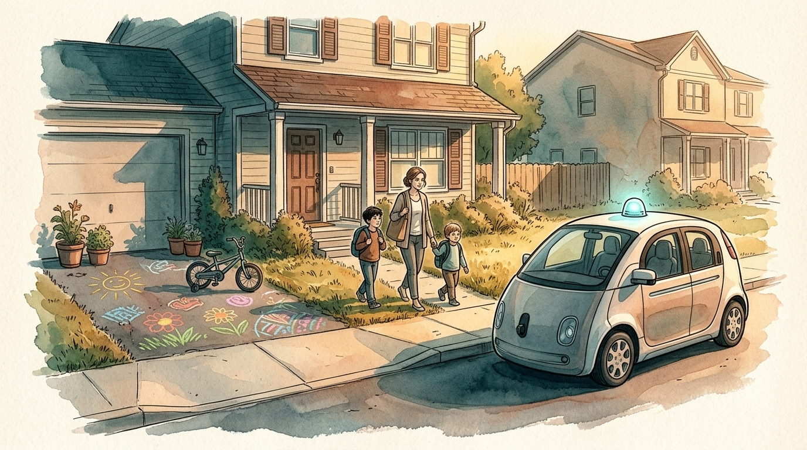
העיר מקבלת בחזרה את החניות
- במחוז לוס אנג'לס, 14% מהשטח העירוני הם חניות
- חניונים חדשים נבנים כך שיוכלו להפוך לדירות
- ושדות תעופה כבר חוששים לאבד את הכנסות החניה
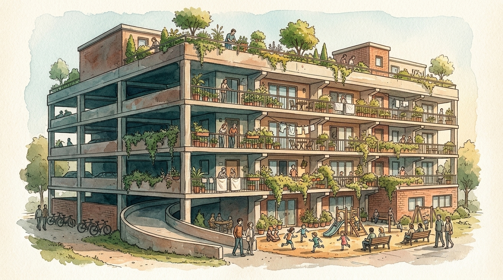
סלון על גלגלים
- מושבים זה מול זה, בלי הגה ובלי נהג
- מיטה במקום טיסה קצרה
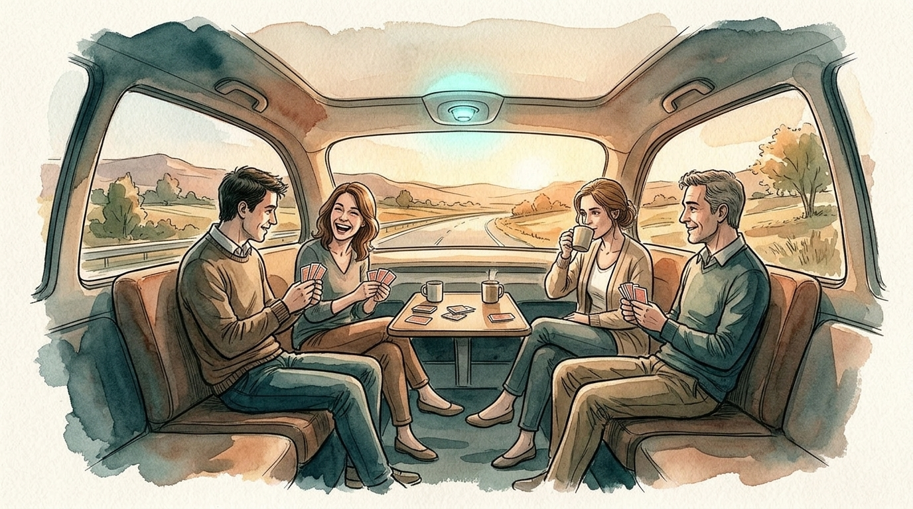
חופש חדש
- בני נוער מגיל 13 מזמינים נסיעה לבד, בפיניקס ובנאשוויל
- גמלאים שקיבלו נהג צמוד נסעו יותר מפי 2
- ובלי נהג תורן - יותר שתייה
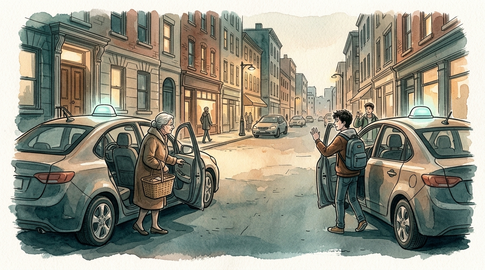
יותר פקקים, לא פחות
- כ-45% מהקילומטרים של המוניות הרובוטיות בקליפורניה נעשים בלי נוסע
- משפחות שקיבלו נהג צמוד נסעו ברכב 60% יותר, ו-70% פחות בתחבורה ציבורית
- וכשהנסיעה נוחה, מסכימים לגור רחוק יותר
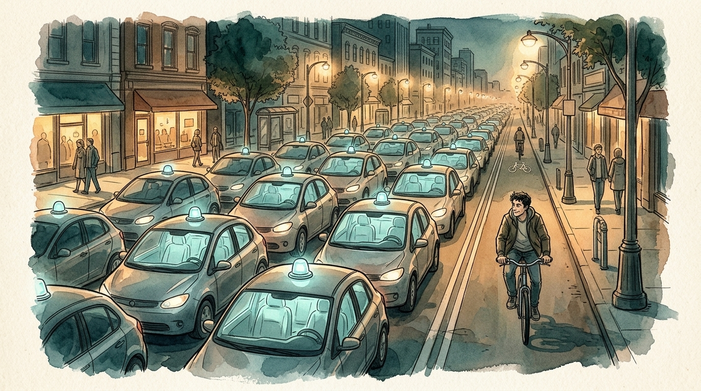
מי מקבל את הדוח?
- שוטרים עצרו מונית רובוטית, ולא היה למי לתת דוח
- ערים מאבדות הכנסות מחניה ומדוחות
- הביטוח והאחריות עוברים מהנהג אל היצרן
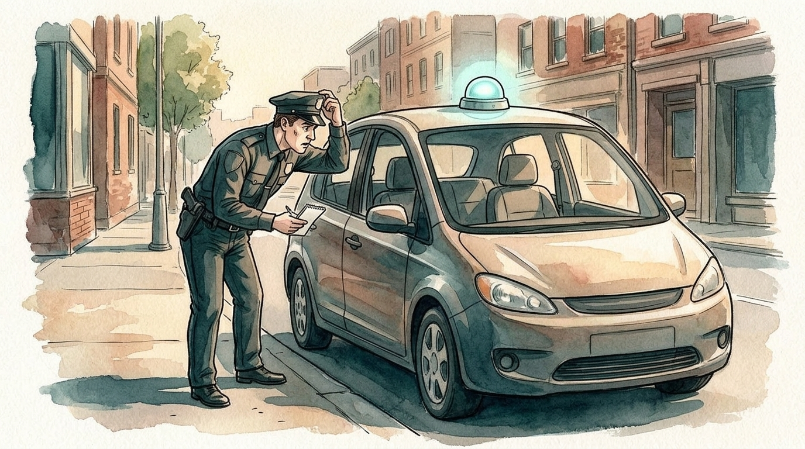
מה שאף אחד לא תכנן
- פחות הרוגים בכבישים - ופחות איברים להשתלה?
- מצלמות הרכב הופכות לעדות במשטרה
שינוי באינטראקציה עם הידע
תנועה חדשה באוקיינוס המידע
מחקר עמוק
השתחררות מהלינאריות: מפת החשיבה
נוטבוק אל-אם, שנקרא היום ג'מיני נוטבוק
פרופסורים בחינם לכולם
והיום: מודלים כבר מתמודדים עם בעיות מתמטיות פתוחות
יצירת וידאו, מרץ 2023
איפה אנחנו היום?
בעיית הסמכות
ידע אנושי בעולם של בינה מלאכותית יודעת כל
רופאים כדוגמה
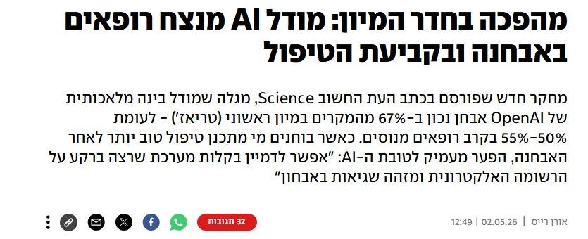
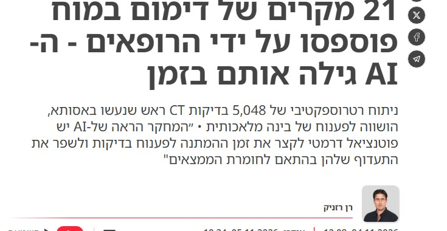
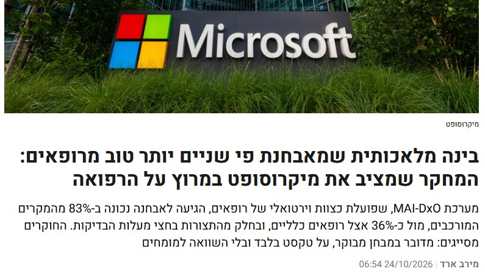
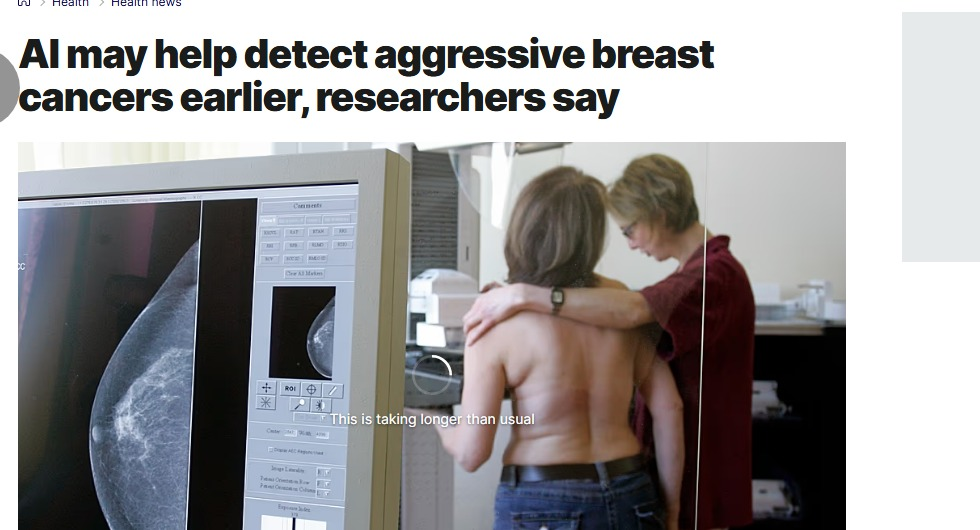
מה מאחורי הכותרות
כל פס מראה באיזה אחוז מהמקרים הגיעו לאבחנה הנכונה
ניוון או התפתחות?
עוד מאותו הדבר, או סיפור חדש?
המורים שהפגינו נגד המחשבון
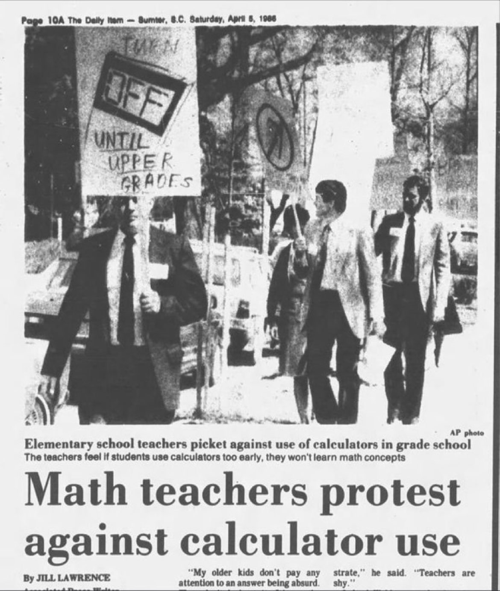
אפלטון, "פיידרוס"
הכתב יביא שכחה, ויעניק את מראית העין של החוכמה.
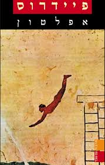
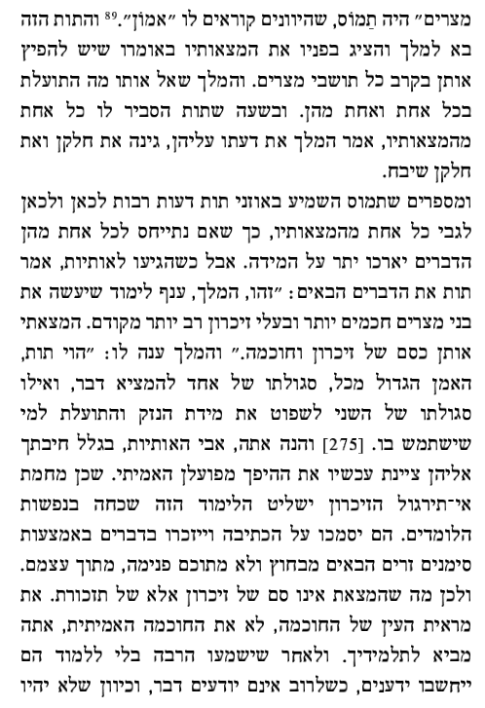
וייז, מחשבון וטלפון
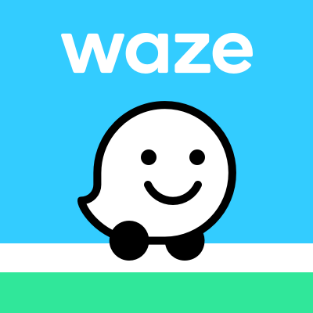
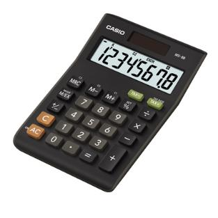
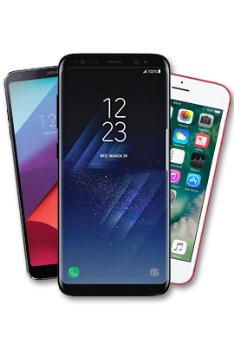
שחררנו את הניווט, החישוב והזיכרון
והפעם: חצי שעה בלי הכלי
- הכלי נפל לחצי שעה בלבד
- ומפתחים כתבו: "חזרתי לכתוב קוד כמו איש מערות"
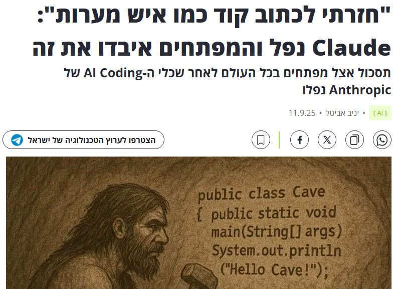
אותו כלי, שני מסלולים
מסלול הקיצור
- נכנסים כדי להיפטר מהר מהמטלה
- מבקשים תוצר
- מעתיקים, ויוצאים
מסלול החשיבה
- נכנסים כדי ליצור משהו גדול מסך חלקיו
- הלוך ושוב, עד שהתוצר באמת מספק
- האדם מעורב לאורך כל הדרך
אותו כלי בדיוק. הכוונה שאיתה נכנסים לשיחה קובעת את המסלול.
המוטיבציה מכריעה
כשאין מוטיבציה ללמוד
כשיש מוטיבציה ללמוד
או במילים אחרות: זה תלוי בנו
הבינה כמראה - שנשלטת על ידי עמק הסיליקון
פרופ' זהר אליוסף, פסיכולוג חינוכי שחוקר את הממשק בין בינה מלאכותית לבריאות הנפש
הבינה יכולה לעשות כמעט הכל
השאלה היא מה אנחנו עדיין רוצים לעשות בעצמנו
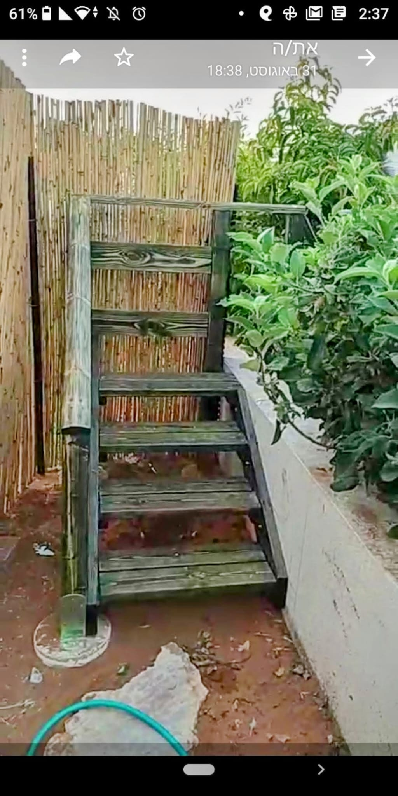
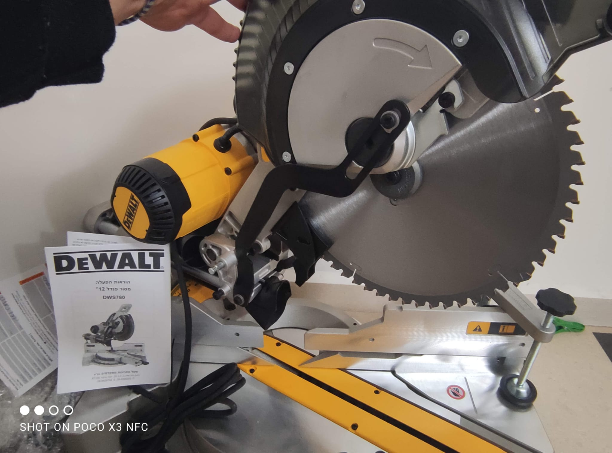
תודה
תום הגלעדי